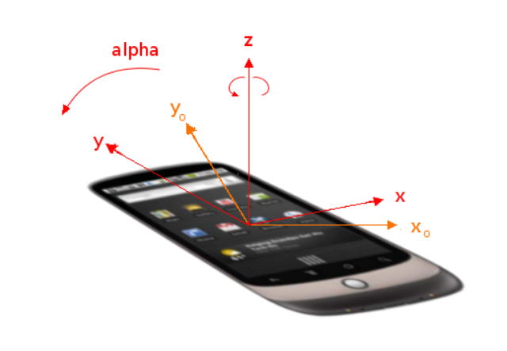
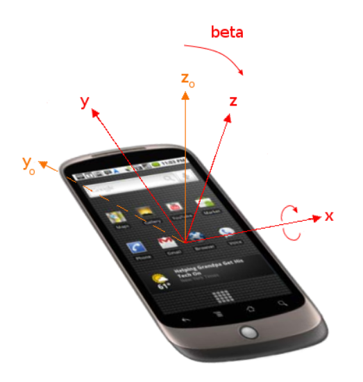

laya.device.motion详解：陀螺仪与加速计
laya.device.motion中共有四个类供开发者使用，分别为加速信息AccelerationInfo、加速计Accelerator、陀螺仪Gyroscope、保存旋转信息RotationInfo。本节将详细描述laya.device.motion API的相关内容。
1、陀螺仪
Gyroscope通过change事件对设备方向改变进行监听。该事件有两个回调参数：
absolute—— 如果设备提供的方位是基于设备坐标系统和地球坐标系统间的差距，则是true；如果设备无法检测到地球坐标系统，absolute为false。rotationInfo—— RotationInfo类型，包含alpha、beta、gamma三个值，将在下面详细讨论。
alpha、beta和gamma属性必须指示设备的方向，其表现形式为从固定在地球上的坐标系到固定在设备上的坐标系的转换。坐标系必须按照下面的描述调整。地球坐标系是一个位于用户位置的“东、北、上”系。其拥有3个轴，地面相切与1984世界测地系统的spheriod的用户所在位置。
东（X）在地面上，垂直于北轴，向东为正。
北（Y）在地面上，向正北为正（指向北极）。
上（Z）垂直于地面，向上为正。
对于一个移动设备，例如电话或平板，设备坐标系的定义于屏幕的标准方向相关。如果在设备旋转或展开滑动键盘时屏幕方向发生变化，这不会影响关于设备的坐标系的方向。
x在屏幕或键盘平面上，屏幕或键盘的右侧为正。
y在屏幕或键盘屏幕上，屏幕或键盘的上方为正。
z垂直于屏幕或键盘屏幕，离开屏幕或键盘为正。
旋转必须使用右手规则，即正向沿一个轴旋转为从该轴的方向看顺时针旋转。从两个系重合开始，旋转应用下列规则：
以设备坐标系z轴为轴，旋转
alpha度。alpha的作用域为[0, 360]。

（图1）

（图2）

（图3）
下面演示获取旋转方位信息：
class Gyroscope_Sample {
private info: Laya.Text;
constructor() {
Laya.init(550, 400);
this.info = new Laya.Text();
this.info.fontSize = 50;
this.info.color = "#FFFFFF";
this.info.size(Laya.stage.width, Laya.stage.height);
Laya.stage.addChild(this.info);
Laya.Gyroscope.instance.on(Laya.Event.CHANGE, this, this.onDeviceorientation);
}
private onDeviceorientation(absolute: Boolean, rotationInfo: Laya.RotationInfo): void {
this.info.text =
"alpha:" + Math.floor(rotationInfo.alpha) + '\n' +
"beta :" + Math.floor(rotationInfo.beta) + '\n' +
"gamma:" + Math.floor(rotationInfo.gamma);
}
}
new Gyroscope_Sample();
2、加速计
Accelerator类定期发送设备的运动传感器检测的活动。此数据表示设备在三维轴上的运动。当设备移动时，传感器检测此移动并返回设备的加速坐标。即使静止的时候，也可以得到包含重力的加速坐标。
change事件的回调函数拥有一个以下参数：
acceleration——AccelerationInfo类型。提供宿主设备相对于地球坐标系的加速信息，其表现形式为定义于陀螺仪章节的主坐标系，单位是m/s^2。accelerationIncludingGravity——AccelerationInfo类型。对于不能提供排除重力影响的加速数据的实现（例如缺少陀螺仪），作为替代，可以提供受重力影响的加速数据。这对于许多应用来说并不好用，但提供这些信息意味着提供了最大力度的支持。在此情况下，accelerationIncludingGravity属性提供宿主设备的加速信息，并加上一个加速度相等方向相反的反重力加速度。其表现形式为定义于陀螺仪章节的主坐标系。加速信息的单位是m/s^2。rotationRate——RotationInfo类型。属性提供宿主设备在空间中旋转的速率，其表现形式为定义于陀螺仪章节的的角度变化速率，单位必须是deg/s。interval—— 从硬件获得数据的间隔，单位是毫秒。
2.1 获取设备物理方向运动信息
加速计轴是设备的物理方向，这表示当你旋转了设备，加速计轴也会随之旋转。
下面演示获取设备运动信息：
class Gyroscope_Sample {
private info: Laya.Text;
constructor() {
Laya.init(550, 400);
this.info = new Laya.Text();
this.info.fontSize = 50;
this.info.color = "#FFFFFF";
this.info.size(Laya.stage.width, Laya.stage.height);
Laya.stage.addChild(this.info);
Laya.Accelerator.instance.on(Laya.Event.CHANGE, this, this.onMotoin);
}
private onMotoin(acceleration: Laya.AccelerationInfo, accelerationIncludingGravity: Laya.AccelerationInfo, rotationRate: Laya.RotationInfo, interval: number): void {
this.info.text =
'acceleration:(' + acceleration.x.toFixed(3) + ', ' + acceleration.y.toFixed(3) + ', ' + acceleration.z.toFixed(3) + ')\n' +
'accelerationIncludingGravity:(' + accelerationIncludingGravity.x.toFixed(3) + ', ' + accelerationIncludingGravity.y.toFixed(3) + ', ' + accelerationIncludingGravity.z.toFixed(3) + ')\n' +
'rotationRate: alpha ' + Math.floor(rotationRate.alpha) + ', beta ' + Math.floor(rotationRate.beta) + ', gamma ' + Math.floor(rotationRate.gamma) + '\n' +
'interval: ' + interval;
}
}
new Gyroscope_Sample();
2.2 获取设备显示方向运动信息
由于我们可能需要显示方向上的运行信息，这表示即使旋转了设备，加速计轴不随之改变，如y轴 始终保持着垂直。使用Accelerator.getTransformedAcceleration()即可获取到显示方向上的运行信息。
在上例的代码的onMotion函数中，使用AccelerationInfo前先使用Accelerator.getTransformedAcceleration()转换信息：
private onMotoin(acceleration: Laya.AccelerationInfo, accelerationIncludingGravity: Laya.AccelerationInfo, rotationRate: Laya.RotationInfo, interval: number): void {
acceleration = Laya.Accelerator.getTransformedAcceleration(acceleration);
accelerationIncludingGravity = Laya.Accelerator.getTransformedAcceleration(accelerationIncludingGravity);
......
}